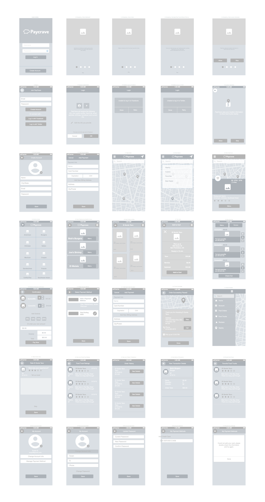
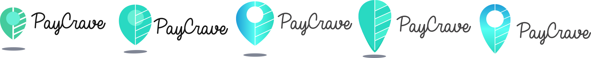
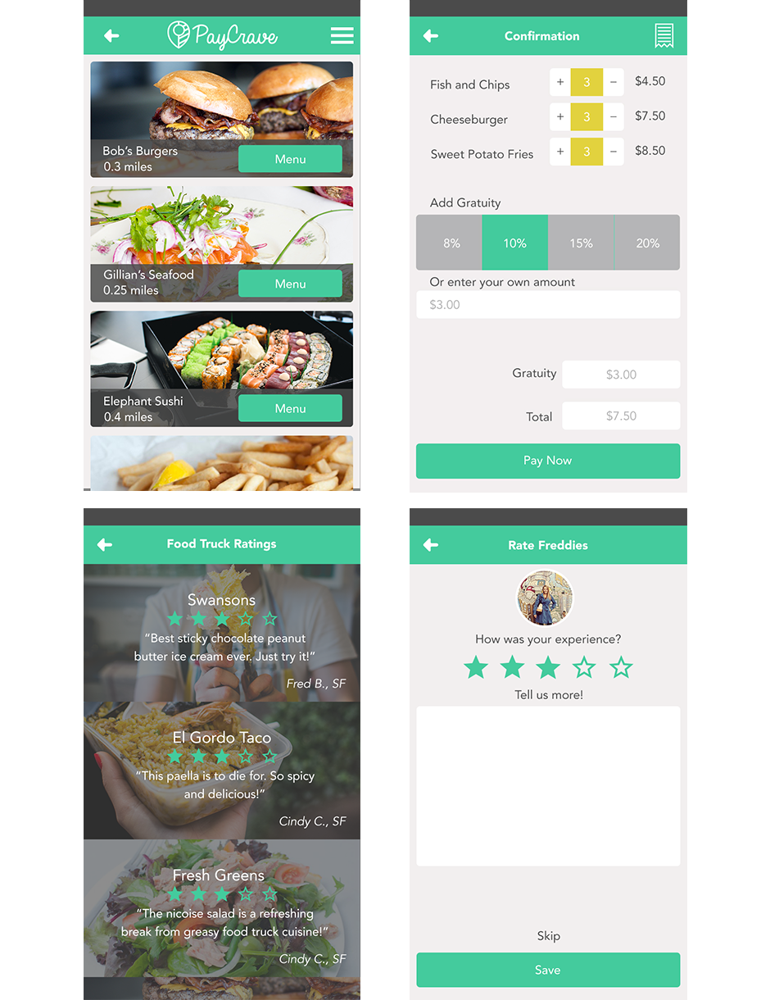

Paycrave is a mobile app concept that allows you to search for foodtrucks nearby, order online and then pay through the app.
The user flow follows the journey of searching for nearby foodtrucks, adding items to your cart and finally purchasing the items. I began the development of Paycrave with defining the user stories. Determining what functionality is most important helped me narrow the focus of the app. I then researched competitors in the same space (Yelp, Square and Caviar) to see what functionality seemed to be most important and what the pain points are. Using the information from this initial discovery phase, I was able to create wireframes.
The next step in the initial design process was to develop the wireframes based on the user stories and user flow that I created. The wireframes I created were detailed and intended to give a complete overview of the visual look and feel of the app. 
The brand uses reduced color palette with green as a distinctive primary colour. Overall the app uses a modern, bright and differentiated brand identity that stands out with personality and hint of playfulness.
I started in one direction, focusing on the idea of playfulness as well as moving towards a goal. PayCrave is approachable, trustworthy and lighthearted. I started in one direction with the logo, utilizing the vibrant color palette.
I decided to focus on two areas most imporant to the brand—location and freshness, which I illustrated in the final mark.
Educating the users about how to use the app was important for a smooth onboarding.
